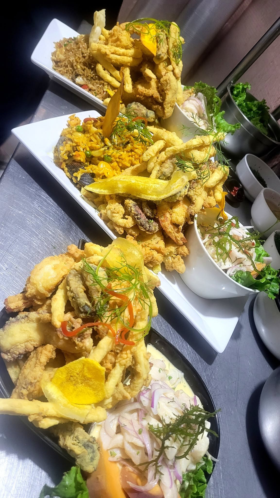

Ceviche en crema de rocoto
Del marUn toque de rocoto para disfrutar nuestro lado cevichero.
Hecho con sabor en Arequipa
Ceviches, chicharrones y esos platos que invitan a quedarse un ratito más. Bienvenido a Punto 3.
Descubre nuestros platosDel mar a tu mesa.
Con el cariño de nuestra cocina.

Una mirada a nuestra cocina.
Fotos de los platos de Punto 3.
Un toque de rocoto para disfrutar nuestro lado cevichero.
Un clásico de nuestra carta para darle gusto al antojo.
Ceviches, chicharrones y platos a la carta para elegir a tu gusto.
Ceviches, chicharrones, platos a la carta y bebidas para acompañar.
Explora nuestros platosSalchipapas nativas y caldo de pollo. El sabor de Punto 3 también se disfruta por la noche.
Conoce más en FacebookRestaurante Cevichería Punto 3
Nos gusta recibirte con buena atención, comodidad y platos que se disfrutan. Ese es el espíritu de nuestra cocina en Arequipa.
Ven con los tuyos. Aquí hay un punto de encuentro para el buen comer.
Nos vemos en Punto 3Arequipa, Perú
Descubre más platos, novedades y detalles de nuestro restaurante en Facebook.
Visita nuestro Facebook